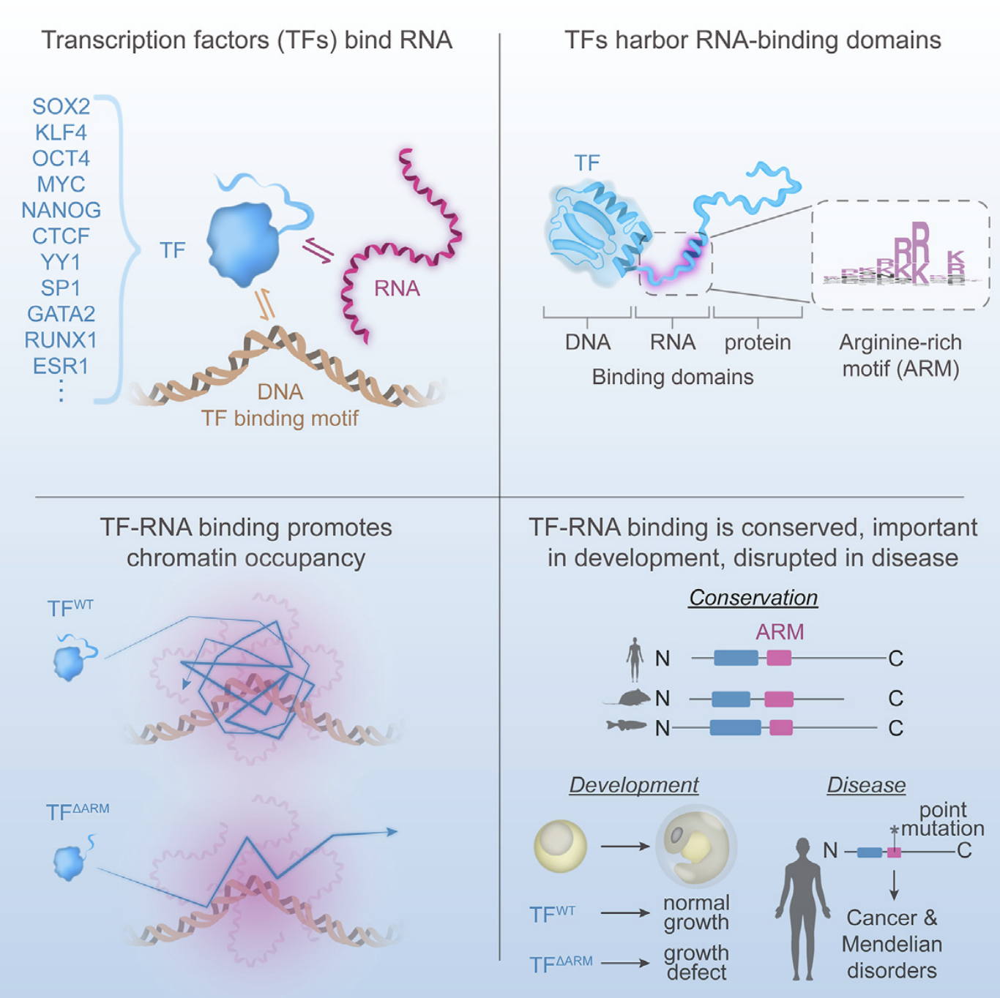
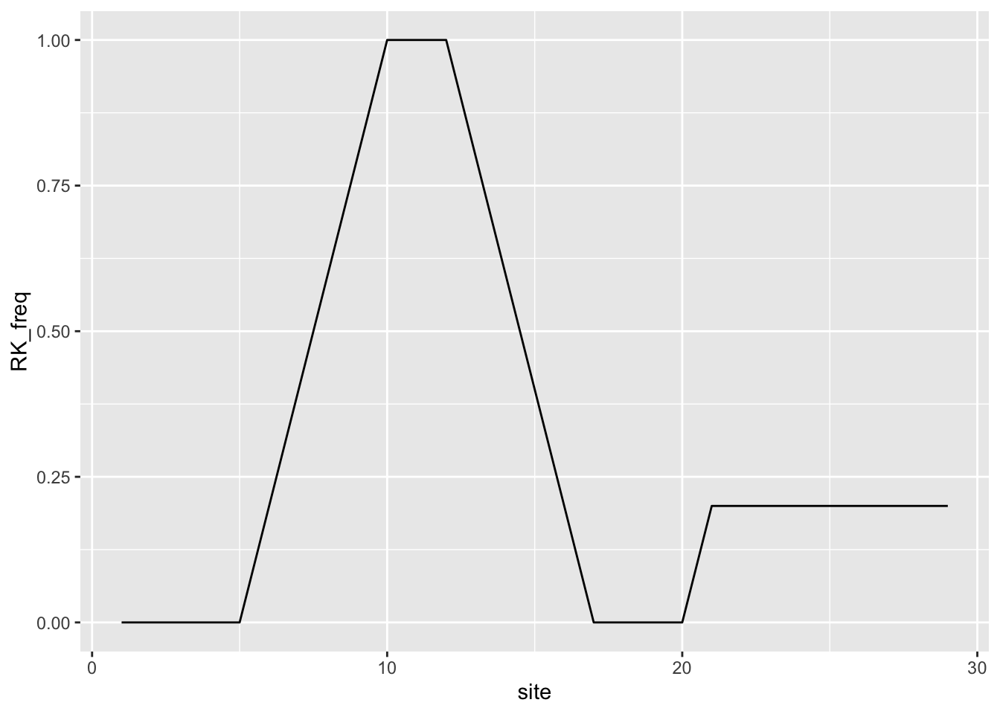
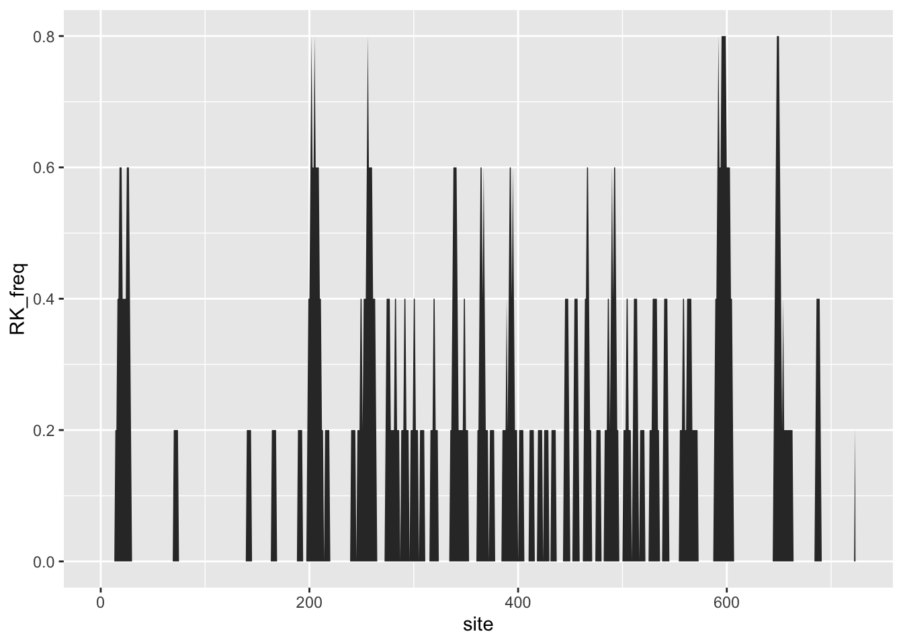
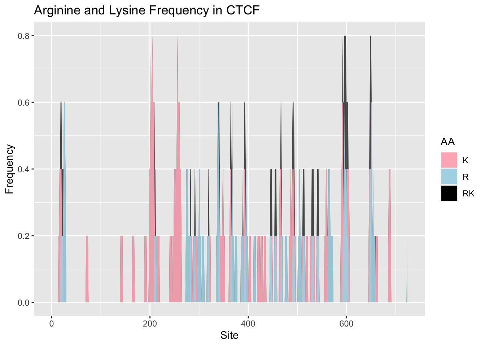
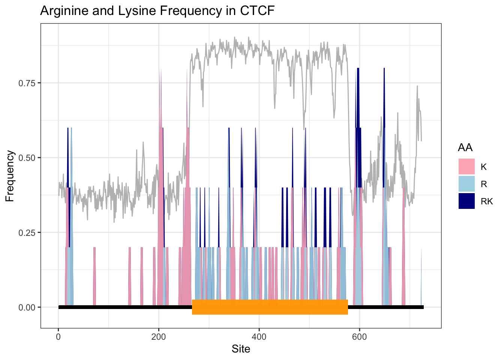
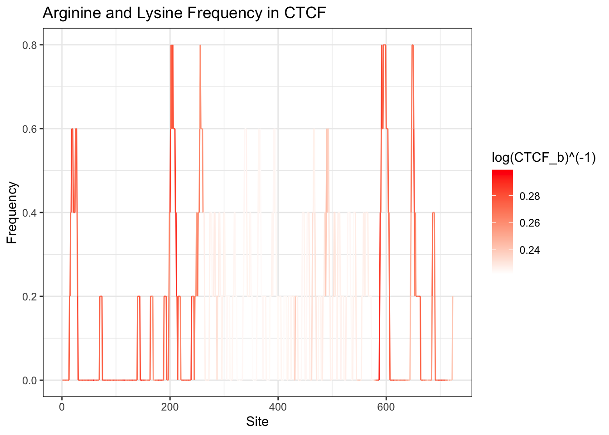
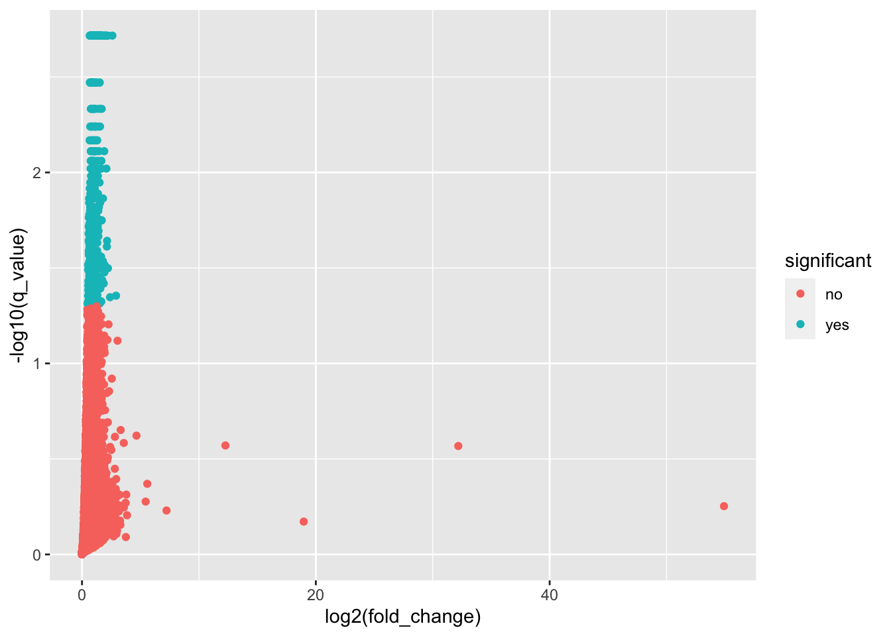
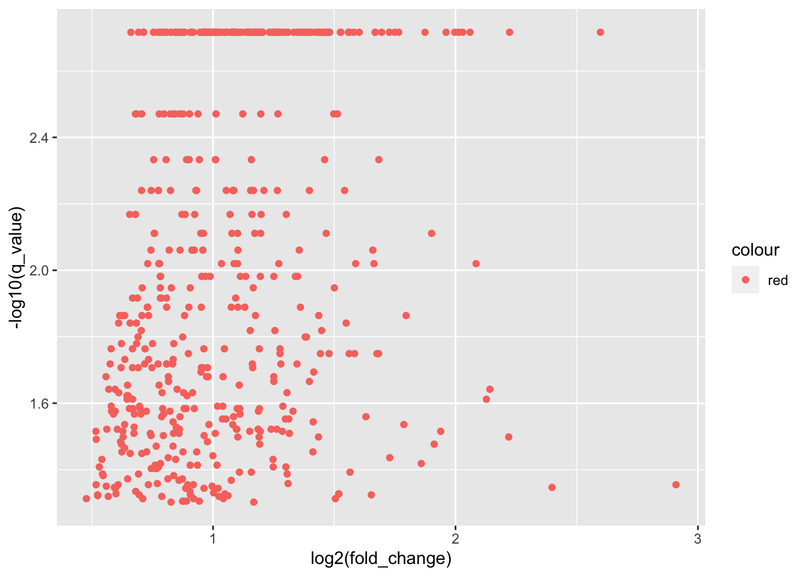

CTCF_seq <- "MEGDAVEAIVEESETFIKGKERKTYQRRREGGQEEDACHLPQNQTDGGEVVQDVNSSVQMVMMEQLDPTLLQMKTEVMEGTVAPEAEAAVDDTQIITLQVVNMEEQPINIGELQLVQVPVPVTVPVATTSVEELQGAYENEVSKEGLAESEPMICHTLPLPEGFQVVKVGANGEVETLEQGELPPQEDPSWQKDPDYQPPAKKTKKTKKSKLRYTEEGKDVDVSVYDFEEEQQEGLLSEVNAEKVVGNMKPPKPTKIKKKGVKKTFQCELCSYTCPRRSNLDRHMKSHTDERPHKCHLCGRAFRTVTLLRNHLNTHTGTRPHKCPDCDMAFVTSGELVRHRRYKHTHEKPFKCSMCDYASVEVSKLKRHIRSHTGERPFQCSLCSYASRDTYKLKRHMRTHSGEKPYECYICHARFTQSGTMKMHILQKHTENVAKFHCPHCDTVIARKSDLGVHLRKQHSYIEQGKKCRYCDAVFHERYALIQHQKSHKNEKRFKCDQCDYACRQERHMIMHKRTHTGEKPYACSHCDKTFRQKQLLDMHFKRYHDPNFVPAAFVCSKCGKTFTRRNTMARHADNCAGPDGVEGENGGETKKSKRGRKRKMRSKKEDSSDSENAEPDLDDNEDEEEPAVEIEPEPEPQPVTPAPPPAKKRRGRPPGRTNQPKQNQPTAIIQVEDQNTGAIENIIVEVKKEPDAEPAEGEEEEAQPAATDAPNGDLTPEMILSMMDR"Mini Lecture: An Explorative Analysis Based on A Research Paper
Introduction
Let’s analyse a recent paper studying transcription factors interacting with RNA

The paper emphasize the role of arginine- and lysine-rich motif (ARM) in the interaction between transcription factors and RNA. The authors found that the vast majority of RNA-binding transcription factors contain an ARM, and that ARM is a key determinant of RNA-binding specificity and affinity.
I am interested in the arginine and lysine frequency in the CTCF protein sequence. CTCF is a transcription factor that binds to DNA and RNA. I want to see if CTCF has ARMs and where they are located.
Load CTCF protein sequence
Let’s first view the protein information of CTCF on the UniProt database and get the protein sequence.
Calculate the arginine and lysine frequency
Creat a function to calculate the frequency of arginine and lysine
I want to calculate the frequency of arginine and lysine in the CTCF sequence by creating a function in R. The function will take in a sequence and return the frequency of arginine and lysine.
- Convert the sequence to uppercase
- Set the chunk size to 5 AA
- Scan the whole sequence by moving the chunk by 1 AA and calculate the frequency of arginine and lysine for each chunk.
- Store the frequency in a dataframe with columns: site, R_freq, K_freq, RK_freq.
Prompt it into GenAI ~
count_RK_freq <- function(sequence) {
# Convert the sequence to uppercase
sequence <- toupper(sequence)
# Set the chunk size
chunk_size <- 5
# Initialize a dataframe to store the results
results <- data.frame(site = integer(), R_freq = numeric(), K_freq = numeric(), RK_freq = numeric())
# Scan the sequence
for (i in 1:(nchar(sequence) - chunk_size + 1)) {
chunk <- substr(sequence, i, i + chunk_size - 1)
# Calculate frequencies
r_freq <- sum(strsplit(chunk, "")[[1]] == "R") / chunk_size
k_freq <- sum(strsplit(chunk, "")[[1]] == "K") / chunk_size
rk_freq <- r_freq + k_freq
# Add to dataframe
results <- rbind(results, data.frame(site = i, R_freq = r_freq, K_freq = k_freq, RK_freq = rk_freq))
}
return(results)
}A quick test
test_seq <- "mmmmmmmmmRRrKKKKnnnnnnnnRnnnnKnnn"
test_seq <- count_RK_freq(test_seq)library(ggplot2)
ggplot(test_seq) + aes(x = site, y = RK_freq) + geom_line()
Calculate the arginine and lysine frequency for the CTCF sequence
CTCF_KR_freq <- count_RK_freq(CTCF_seq)
# Plot KR_freq vs site by geom_area
ggplot(CTCF_KR_freq) +
aes(x = site, y = RK_freq) +
geom_area()
# Plot K_freq, R_freq, and KR_freq vs site by geom_area filled with different colors
ggplot(CTCF_KR_freq) +
geom_area(aes(x = site, y = RK_freq, fill = "RK"), alpha = 0.7) +
geom_area(aes(x = site, y = K_freq, fill = "K"), alpha = 0.9) +
geom_area(aes(x = site, y = R_freq, fill = "R"), alpha = 0.9) +
# Add a legend
scale_fill_manual(name = "AA", values = c("RK" = "black", "K" = "lightpink", "R" = "lightblue")) +
# Add a title and labels
labs(title = "Arginine and Lysine Frequency in CTCF", x = "Site", y = "Frequency")
Retrieve the pLDDT (disordered) score from the Alphafold predicted PDB file of CTCF
Load the Alphafold predicted PDB file of CTCF “AF-P49711-F1-model_v4.pdb” by library bio3d.
library(bio3d)
CTCF_pdb <- read.pdb("AF-P49711-F1-model_v4.pdb")Retrieve the B-factor of each “C” elety from the PDB file use library dplyr
library(dplyr)
Attaching package: 'dplyr'The following objects are masked from 'package:stats':
filter, lagThe following objects are masked from 'package:base':
intersect, setdiff, setequal, unionCTCF_b <- CTCF_pdb$atom %>%
filter(elety == "CA") %>%
select(b)cbind the B-factor to the CTCF_KR_freq dataframe
# CTCF_KR_freq <- cbind(CTCF_KR_freq, CTCF_b)
# This code does not work because the number of rows of CTCF_KR_freq and CTCF_b are different.
# We need to trimmed the first and last two elements of CTCF_b to reach the same length as CTCF_KR_freq
CTCF_b <- CTCF_b[3:(nrow(CTCF_b) - 2), ]
CTCF_KR_freq <- cbind(CTCF_KR_freq, CTCF_b)Make a plot
p <- ggplot(CTCF_KR_freq) +
geom_line(aes(x = site, y = CTCF_b / 100), color = "gray") +
geom_area(aes(x = site, y = RK_freq, fill = "RK"), alpha = 1) +
geom_area(aes(x = site, y = K_freq, fill = "K"), alpha = 0.9) +
geom_area(aes(x = site, y = R_freq, fill = "R"), alpha = 0.9) +
scale_fill_manual(name = "AA", values = c("RK" = "darkblue", "K" = "lightpink", "R" = "lightblue")) +
labs(title = "Arginine and Lysine Frequency in CTCF", x = "Site", y = "Frequency") +
theme_bw()
# Draw a line representing the protein sequence at the bottom of the plot
p <- p + geom_segment(aes(x = 1, xend = nchar(CTCF_seq), y = 0, yend = 0), color = "black", size = 1.5)Warning: Using `size` aesthetic for lines was deprecated in ggplot2 3.4.0.
ℹ Please use `linewidth` instead.# Annotate the zinc finger regions of CTCF at sites: 266-577 by rectangles
p + geom_rect(aes(xmin = 266, xmax = 577, ymin = -0.025, ymax = 0.025), fill = "orange", alpha = 0.2)
## make a plot of KR_freq vs site with the B-factor as the color using area
ggplot(CTCF_KR_freq) +
geom_line(aes(x = site, y = RK_freq, color = log(CTCF_b) ^ (-1))) +
scale_color_gradient(low = "white", high = "red") +
labs(title = "Arginine and Lysine Frequency in CTCF", x = "Site", y = "Frequency") +
theme_bw()
Analyse the CTCF RNA immunoprecipitation sequencing (RIP-seq) data from ENCODE
Let’s have a search and see if we have any CTCF RNA binding profile data.
ENCODE is a public database of genomic data. It contains many types of genomic data, including RNA-seq, ChIP-seq, RIP-seq, etc.
RIP-seq data of CTCF is reported on K562 and GM12878 cell line. We will use the CTCF RIP-seq data from K562 cell line.
Load the gene quantification TSV file “ENCFF552MWL.tsv” by library readr
library(readr)
CTCF_RIP <- read_tsv("ENCFF552MWL.tsv")Rows: 48453 Columns: 14
── Column specification ────────────────────────────────────────────────────────
Delimiter: "\t"
chr (8): test_id, gene_id, gene, locus, sample_1, sample_2, status, significant
dbl (6): value_1, value_2, log2(fold_change), test_stat, p_value, q_value
ℹ Use `spec()` to retrieve the full column specification for this data.
ℹ Specify the column types or set `show_col_types = FALSE` to quiet this message.Have a look at this dataset
head(CTCF_RIP)# A tibble: 6 × 14
test_id gene_id gene locus sample_1 sample_2 status value_1 value_2
<chr> <chr> <chr> <chr> <chr> <chr> <chr> <dbl> <dbl>
1 ENSG00000000003.… ENSG00… TSPA… chrX… ctcf input NOTEST 0.0671 0.163
2 ENSG00000000005.5 ENSG00… TNMD chrX… ctcf input NOTEST 0 0.0454
3 ENSG00000000419.8 ENSG00… DPM1 chr2… ctcf input OK 63.7 42.7
4 ENSG00000000457.8 ENSG00… SCYL3 chr1… ctcf input OK 8.75 8.78
5 ENSG00000000460.… ENSG00… C1or… chr1… ctcf input OK 27.9 23.6
6 ENSG00000000938.8 ENSG00… FGR chr1… ctcf input NOTEST 0.0905 0.0420
# ℹ 5 more variables: `log2(fold_change)` <dbl>, test_stat <dbl>,
# p_value <dbl>, q_value <dbl>, significant <chr>table(CTCF_RIP$significant)
no yes
46719 1734 summary(CTCF_RIP$p_value) Min. 1st Qu. Median Mean 3rd Qu. Max.
0.00005 0.49055 1.00000 0.74877 1.00000 1.00000 summary(CTCF_RIP$q_value) Min. 1st Qu. Median Mean 3rd Qu. Max.
0.001922 0.813944 1.000000 0.835909 1.000000 1.000000 # Count how many genes are significant
sum(CTCF_RIP$significant == "yes")[1] 1734# Count how many genes have a q-value < 0.05
sum(CTCF_RIP$q_value < 0.05)[1] 1734Filter the dataset to remove rows with NA, Inf, or less than 0 log2(fold_change) values and q_value values of 1.
# Trimmed out rows with NA or Inf `log2(fold_change)` values.
library(dplyr)
CTCF_RIP_trimmed <- CTCF_RIP %>%
filter(!is.na(`log2(fold_change)`) &
`log2(fold_change)` != Inf &
`log2(fold_change)` != -Inf &
`log2(fold_change)` >= 0)
# Trimmed out rows with `q_value` values of 1.
CTCF_RIP_trimmed <- CTCF_RIP_trimmed %>%
filter(q_value != 1)Let’s plot the log2 fold change vs the - log10 q-value
ggplot(CTCF_RIP_trimmed) +
geom_point(aes(x = `log2(fold_change)`, y = -log10(q_value), color = significant))
# Plot only the significant genes
CTCF_RIP_trimmed_sig <- CTCF_RIP_trimmed %>%
filter(significant == "yes")
ggplot(CTCF_RIP_trimmed_sig) +
geom_point(aes(x = `log2(fold_change)`, y = -log10(q_value), color = "red"))
Print genes name that have a log2(fold_change) > 2 and are significant
CTCF_RIP_trimmed_sig %>%
filter(`log2(fold_change)` > 2) %>%
select(gene, `log2(fold_change)`, q_value)# A tibble: 11 × 3
gene `log2(fold_change)` q_value
<chr> <dbl> <dbl>
1 RP11-782C8.5 2.91 0.0442
2 AC063976.1 2.13 0.0244
3 SUCLA2P2 2.03 0.00192
4 CTC-261N6.3 2.40 0.0450
5 CTD-2218K11.2 2.22 0.0317
6 CTD-2024D23.1 2.06 0.00192
7 RP11-574M7.1 2.60 0.00192
8 RP11-325E5.1 2.14 0.0228
9 CTC-448F2.4 2.01 0.00192
10 CTD-2528L19.6 2.22 0.00192
11 VN1R83P 2.08 0.00955Session Info
sessionInfo()R version 4.3.2 (2023-10-31)
Platform: aarch64-apple-darwin20 (64-bit)
Running under: macOS Sonoma 14.1.2
Matrix products: default
BLAS: /Library/Frameworks/R.framework/Versions/4.3-arm64/Resources/lib/libRblas.0.dylib
LAPACK: /Library/Frameworks/R.framework/Versions/4.3-arm64/Resources/lib/libRlapack.dylib; LAPACK version 3.11.0
locale:
[1] en_US.UTF-8/en_US.UTF-8/en_US.UTF-8/C/en_US.UTF-8/en_US.UTF-8
time zone: America/Los_Angeles
tzcode source: internal
attached base packages:
[1] stats graphics grDevices utils datasets methods base
other attached packages:
[1] readr_2.1.4 dplyr_1.1.4 bio3d_2.4-4 ggplot2_3.4.4
loaded via a namespace (and not attached):
[1] bit_4.0.5 gtable_0.3.4 jsonlite_1.8.8 crayon_1.5.2
[5] compiler_4.3.2 tidyselect_1.2.0 Rcpp_1.0.11 parallel_4.3.2
[9] scales_1.3.0 yaml_2.3.7 fastmap_1.1.1 R6_2.5.1
[13] labeling_0.4.3 generics_0.1.3 knitr_1.45 htmlwidgets_1.6.3
[17] tibble_3.2.1 munsell_0.5.0 pillar_1.9.0 tzdb_0.4.0
[21] rlang_1.1.2 utf8_1.2.4 xfun_0.41 bit64_4.0.5
[25] cli_3.6.1 withr_2.5.2 magrittr_2.0.3 digest_0.6.33
[29] grid_4.3.2 vroom_1.6.4 rstudioapi_0.15.0 hms_1.1.3
[33] lifecycle_1.0.4 vctrs_0.6.5 evaluate_0.23 glue_1.6.2
[37] farver_2.1.1 fansi_1.0.5 colorspace_2.1-0 rmarkdown_2.25
[41] tools_4.3.2 pkgconfig_2.0.3 htmltools_0.5.7